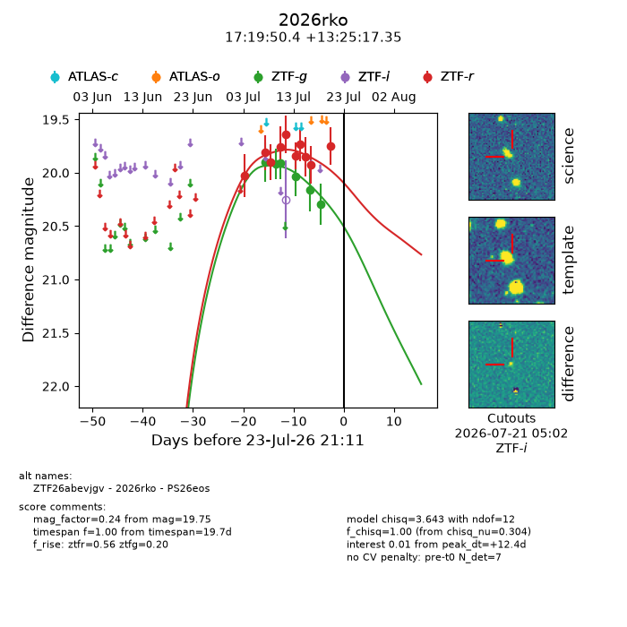
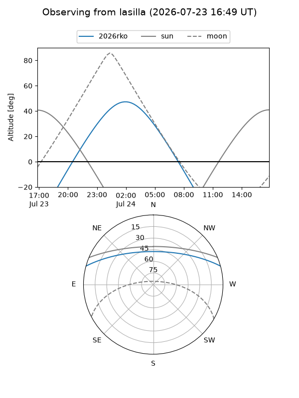
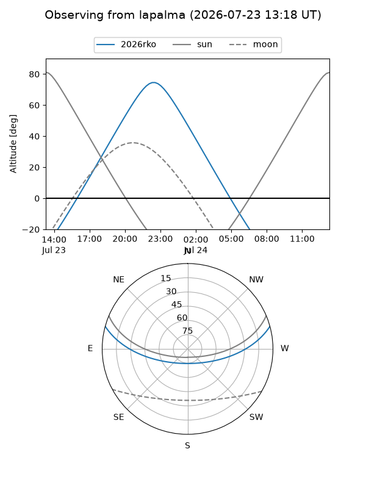
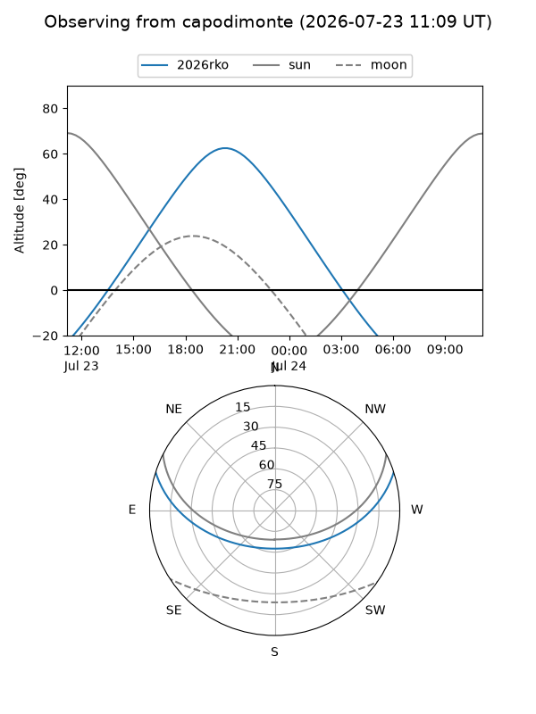
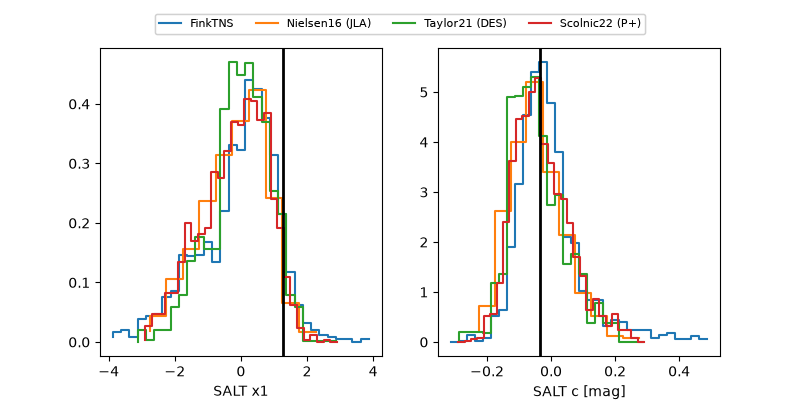

2026rko
Target 2026rko at 2026-07-23 21:14
Aliases and brokers:
FINK-ZTF: ztf.fink-portal.org/ZTF26abevjgv
Lasair-ZTF: lasair-ztf.lsst.ac.uk/objects/ZTF26abevjgv
ALeRCE-ZTF: alerce.online/object/ZTF26abevjgv
YSE-PZ: ziggy.ucolick.org/yse/transient_detail/2026rko
TNS name: wis-tns.org/object/2026rko
Direct TNS query: direct search
alt names
ZTF26abevjgv (ztf,fink_ztf)
2026rko (tns,yse)
PS26eos (panstarrs)
Coordinates:
equatorial (ra, dec) = 259.9598,+13.42149
equatorial (HMS+DMS) = 17:19:50.36,+13:25:17.35
galactic (l, b) = (35.1045,+26.27578)
Flags:
TNS type: nan
peak dt: +12.4
Photometry:
last ztfg=20.29, ztfr=19.75
6 ztfg, 10 ztfr detections
Lightcurve

Visibility



Additional plots
